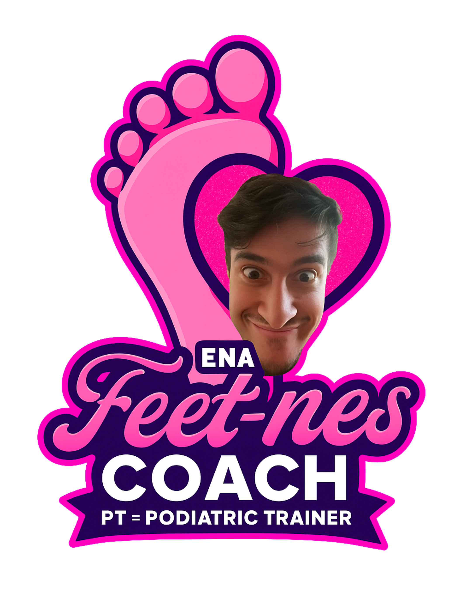
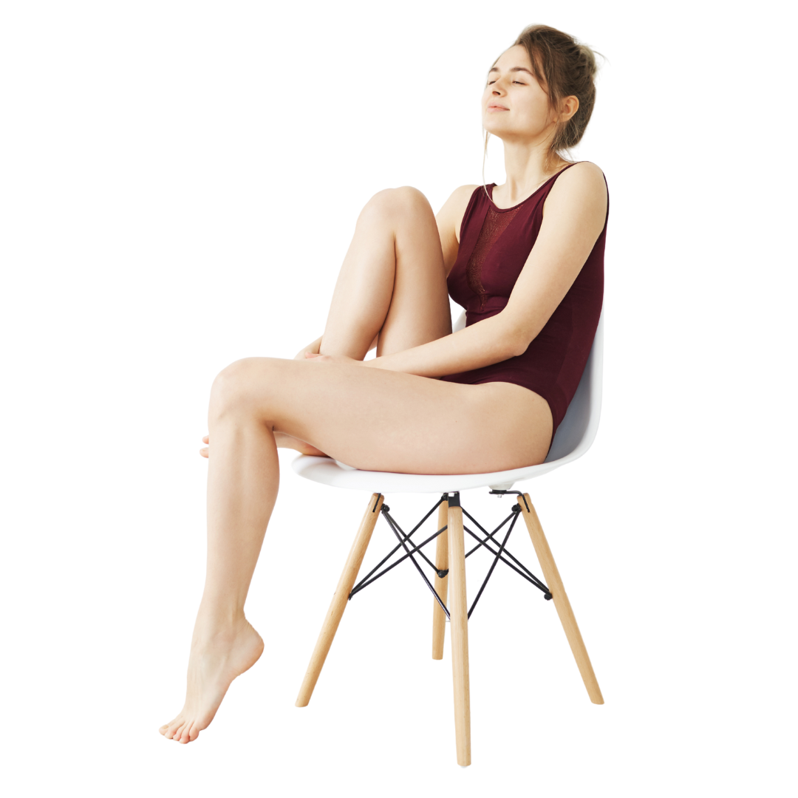

Chill Vibes and Damn Good Feet
Mostrami cosa significa davvero Feet-nes per te.
Opinione Discreta e Professionale in 24h
Scopri il tuo lato Feet-nes
Lasciati sorprendere da un’esperienza che unisce stile, benessere e un pizzico di ironia. Ena Feet-nes Coach è la tua guida provocatoria ma professionale nel mondo del feticismo dei piedi – con classe.
